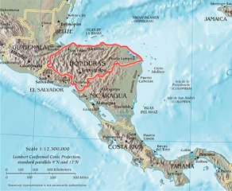
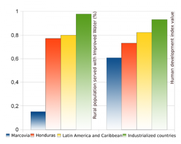

History: context
Regional Context and International Development Program
Honduras is one of the poorest countries in Central America. Since 2008, the NGO "Ingeniería Sin Fronteras Galicia” (ISF) has been developing an International Cooperation Program within the municipalities of Marcovia and San Francisco de Coray, codenamed «Fonsagua». The initiative intends to foster water and sanitation access as a way to reduce poverty.
The «Plan de Gestión Integral del Recurso Hídrico» is used to study, design and planing water actions within the guidelines of the program: build water and sanitation systems, empowerment communities and local institutions plus spreading the use of appropriate technology and sustainable models.
Along the process, the technicians have to manage several sources of data to generate some proposals of water and sanitation. gvSIG Fonsagua’s aim is to integrate in an unique tool the capabilities for those technicians to gather, analyze and generate information. Before development, those processes were being made by using different applications in a highly manual process.